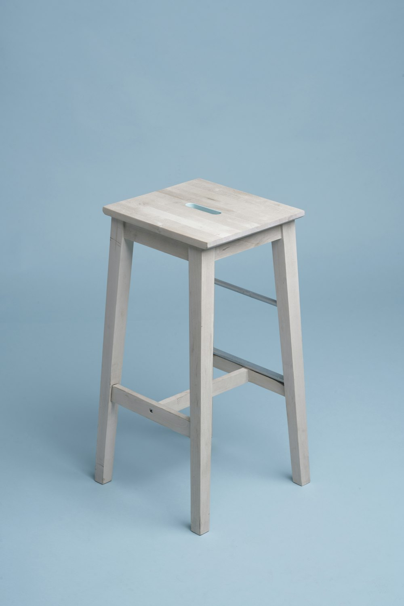
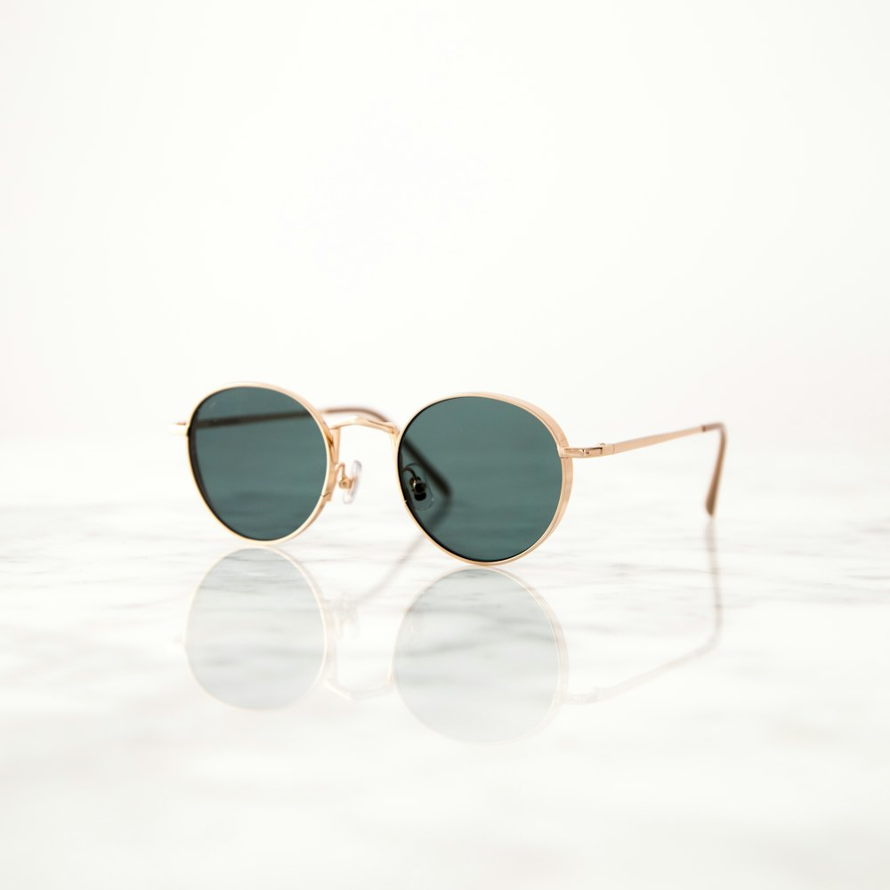
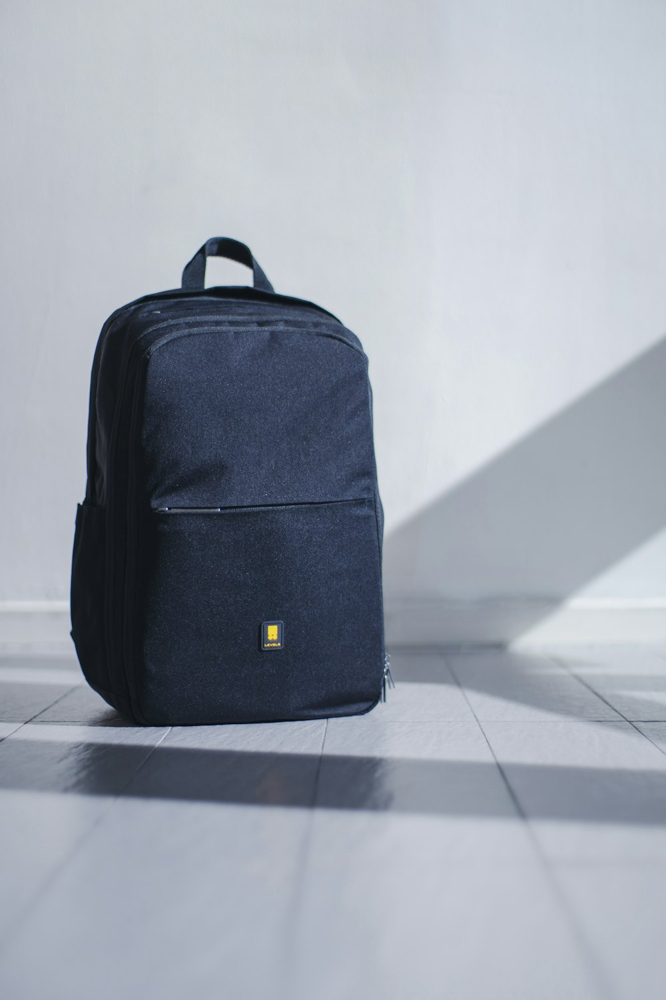
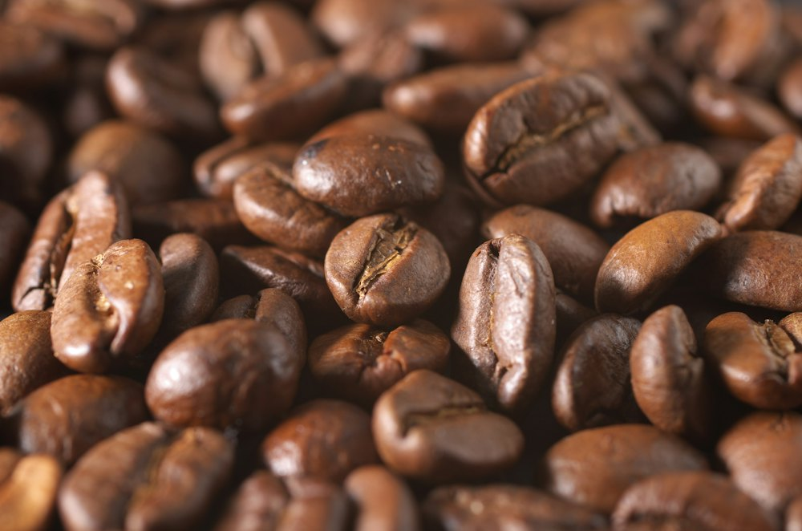
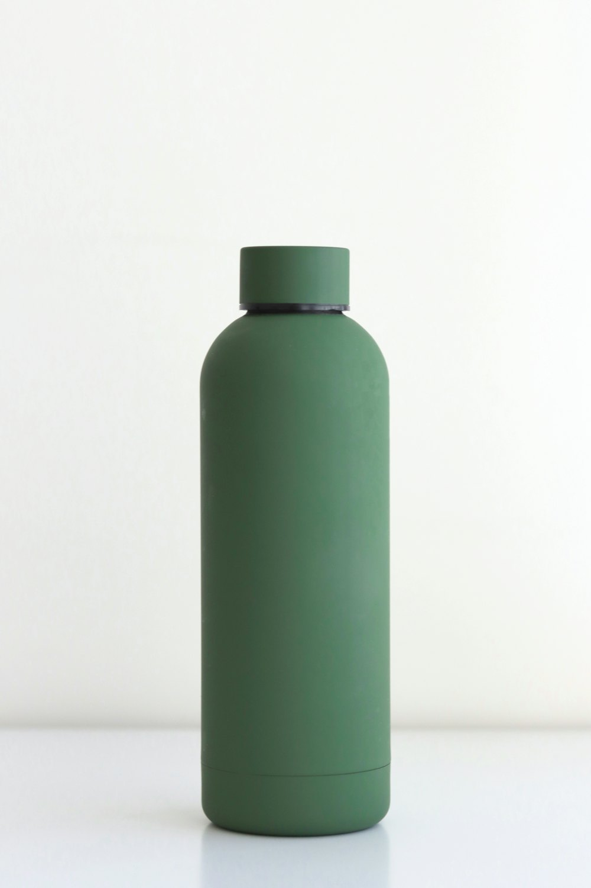
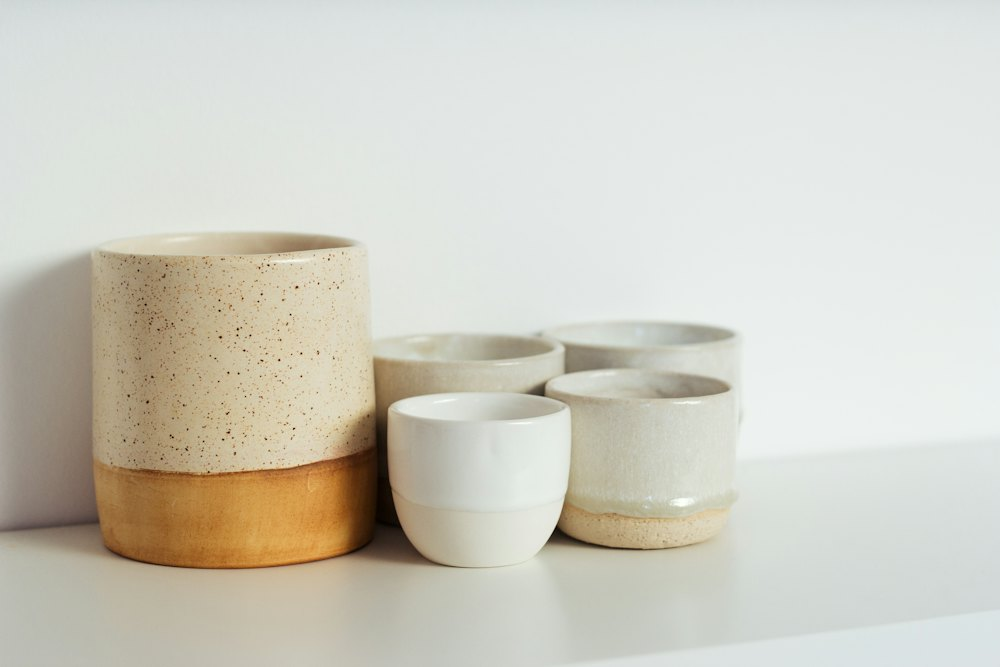
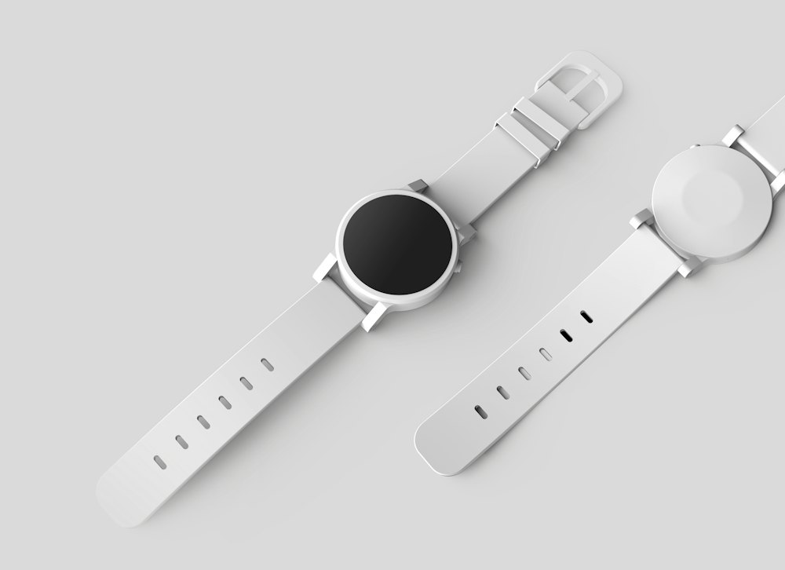

Arca Home turned a showroom favourite into an online bestseller, with a store that makes good furniture easy to buy.
View case study
Lente makes sunglasses in small batches and sells every pair, with a waiting list that does the marketing for them.
View case study
Norte makes bags meant to last a decade, and a repair programme that turns first-time buyers into customers for life.
View case study
Brasa Coffee roasts to order and ships the same day, so every bag reaches the kitchen at its very best.
View case study
Verde makes one bottle meant to replace a thousand, and a refill programme that keeps customers coming back for years.
View case study
Alba Ceramics went from weekend markets to shipping nationwide, keeping the care of a small studio in every parcel.
View case study
Solene sells one watch and sells it well, with a product page that answers every question before a customer thinks to ask it.
View case study